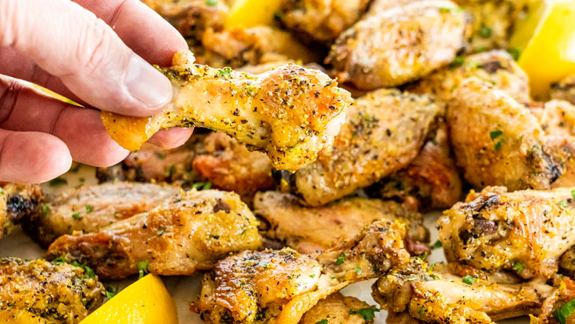

Fried Lemon-Pepper Wings

Prep: 20 mins
Cook: 10 mins
Servings: 12 wings
INGREDIENTS
- 2 1/2pounds chicken wings
- 1/2 cup all-purpose flour
- 2 tablespoons salt
- 1/4 tablespoon pepper
- Oil for deep-frying
- 2 tablespoons butter, melted
- 1 1/2 tablespoons lemon-pepper seasonig
- 2 tablespoons minced fresh parsley
METHOD
- Cut wings into 3 sections; discard wing tip sections. In a large bowl, combine flour, salt and pepper. Add wings, a few at a time, and toss to coat.
- In an electric skillet or deep fryer, heat oil to 375°. Fry wings, a few at a time, until no longer pink, 3-4 minutes on each side. Drain on paper towels. In a large bowl, combine butter and lemon pepper. Add wings; toss to coat. Sprinkle with parsley. Serve immediately.
HOME